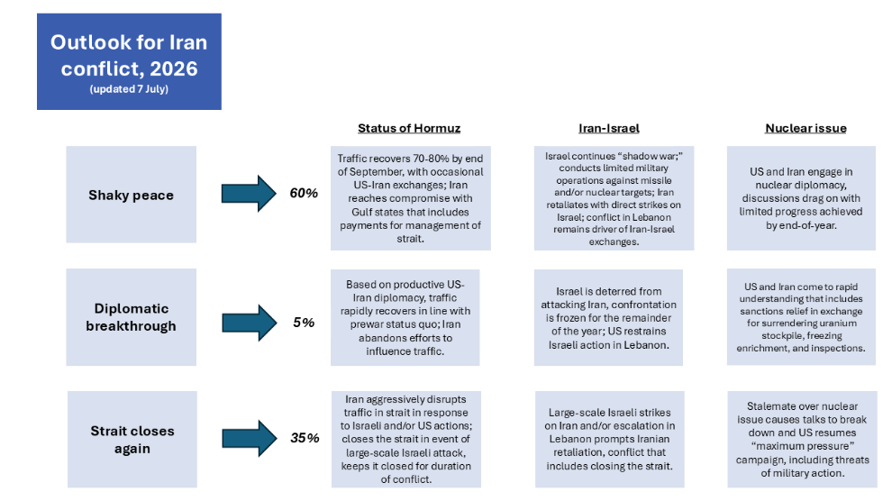
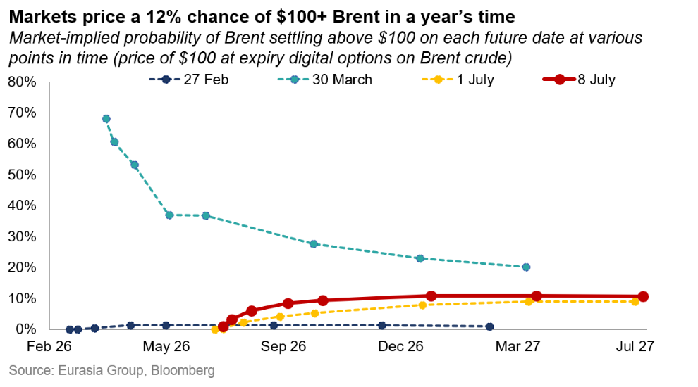
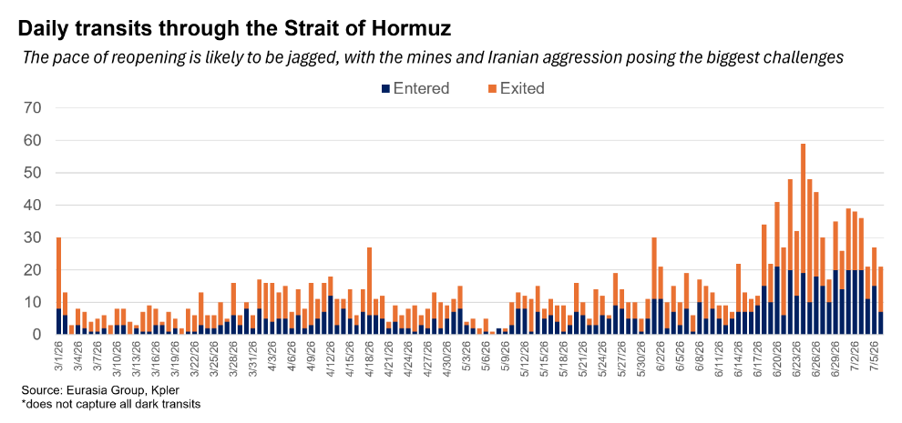
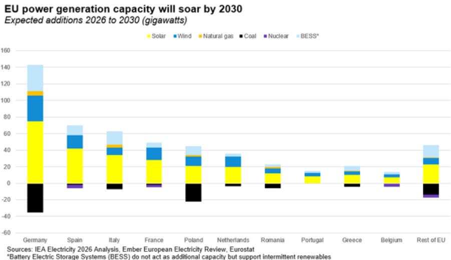

|
09 Jul 2026 08:19 EDT |
||
|
|||
|
|||
summary
|
|||
the top lineIran, MENA Crisis—Iran war and ceasefire outlook
  
US—Trump's arms sales announcements are positive for US defense industry
US—Affordability pressure on big corporations will persist
Europe, Energy, Climate, & Resources—Wholesale electricity costs will fall sharply before 2030

Upcoming conference calls
|
||
eg in depthChina—Recent engagement with key officials: On an EG conference call, analysts discussed how Beijing's post-summit mood borders on worrisome exuberance: officials believe they fought Trump to a draw on tariffs, and that detente got a shot in the arm—raising expectations that may not be met. China sees Trump as a Washington unicorn who wants a deal his Cabinet doesn't. Beijing's strategy: build institutions before 2028, making them harder for any successor to dismantle. China's regulatory arsenal is for deterrence, not imminent action, but risks putting US companies in a compliance crossfire. The People's Liberation Army says it will likely solve its amphibious bottleneck by 2027, but Taiwan remains a longer-term risk. Read more here. Reach out to discuss: china@eurasiagroup.net.
Argentina—Milei pushes central bank reform in a narrow legislative window: During an interview on 7 July, President Javier Milei touted a planned central bank reform, which he said will include a US-style fiscal shutdown mechanism. The government is reportedly planning to submit the central bank reform bill by August, which would codify central bank independence by banning any directive to finance the Treasury. The legislative path, however, is narrowing: several major bills are already competing for congressional attention, and as the 2027 electoral cycle approaches, the political cost of assembling majorities will likely rise. Read more here. Reach out to discuss: latinamerica@eurasiagroup.net.
Ghana—Eurobond payment will support path to regaining market access: The finance ministry settled a $700 million Eurobond obligation on 2 July, bringing total payments to bondholders to $2.58 billion since October 2024—a sign of the authorities' commitment to restoring investor confidence. A return to the domestic bond market after a three-year absence, and state-owned cocoa company COCOBOD's shift to local-currency bonds, signal a broader localization of financing. The 2026 budget does not envision returning to international markets, but restructured domestic maturities due in 2027 and 2028 may force external borrowing. The mid-year budget review this month should clarify the path. Read more here. Reach out to discuss: africa@eurasiagroup.net.
Ecuador—New extradition law will deepen US security cooperation: With 139 votes in favor and one abstention, the national assembly unanimously approved a new extradition law on 7 July. The legislation defines specific responsibilities during the process and sets up a specialized unit that reviews every case, which would expedite the extradition process. The law will likely deepen security cooperation with the US, as it will facilitate the extradition of high-profile criminals. The issue remains popular among the electorate, as the question of allowing extraditions received strong support in the 2024 referendum. Read more here. Reach out to discuss: latinamerica@eurasiagroup.net.
The EG Daily Brief is compiled by Jens Larsen, Lucy Eve, Babak Minovi, Pietro Guglielmi, Rahul Bhatia, Marilia Sirio, Joseph Craven, Martina Silva, Sol Lopes, and Trista Kelley, with help from Marina Tavares, and Astral Betteridge. |
||
 |
closing quipThis is in retribution for yesterday’s bombing of ships by Iran. If it happens again, it will get much worse!”—Trump posted on Truth Social on 8 July, referring to US strikes. |
||
 |
|||